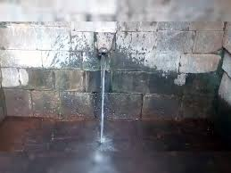
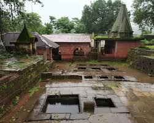
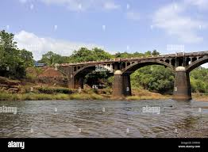
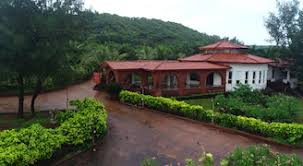
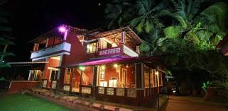

Rajapur is a historic town in Ratnagiri district, Maharashtra, known for its spiritual importance, riverside scenery, and its association with Sant Rajaram Maharaj and other cultural figures of the Konkan region.

A unique freshwater stream that flows year-round and is considered sacred by locals.

Ancient temples reflecting the deep spiritual and cultural roots of Rajapur.

Scenic landscapes formed by rivers and green hills typical of the Konkan belt.

rating: 4.2 | Comfortable stay near town center.

rating: 4.0 | Budget-friendly rooms with peaceful surroundings.